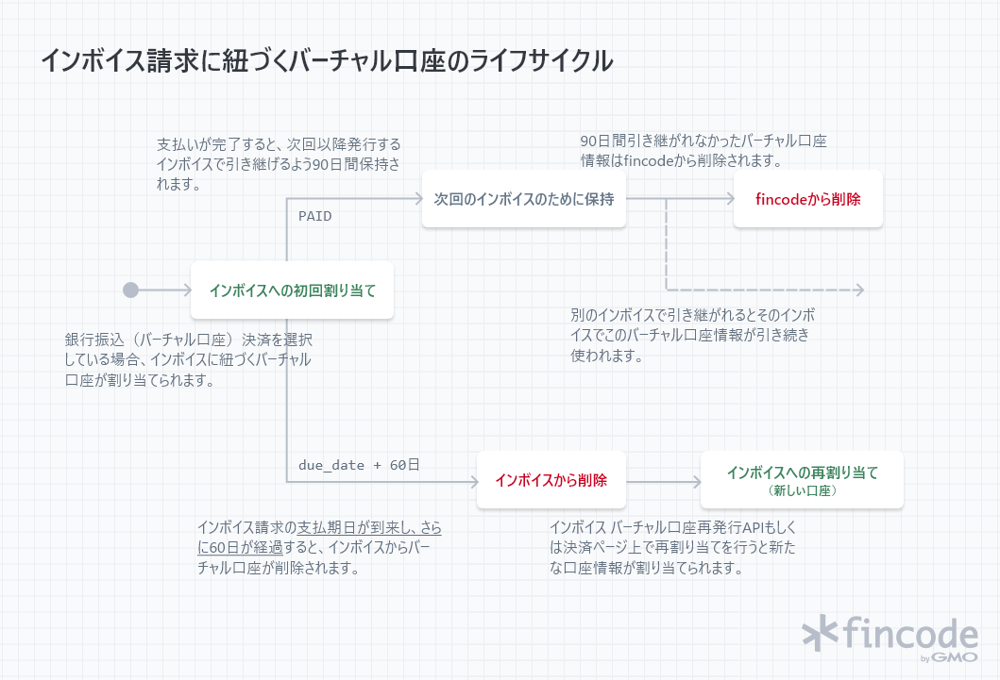

运营与注意事项
撤回账单
可以通过“取消”撤回账单。取消后，账单状态会变为キャンセル（CANCELED），账单内容仍无法修改。
在控制面板的账单列表中找到该账单，点击右侧菜单中的“撤回”，或调用取消账单API，即可取消账单。
下载账单和收据 PDF
可在控制面板的账单列表中下载已签发的账单及收据 PDF。
下载多张账单时，可在“批量 PDF”标签页选择目标账单并一次下载。买家也可从收到的账单通知邮件打开网页并下载 PDF。
下载规格
文件格式：PDF。批量下载的 PDF 会打包为 ZIP。
生成单位：每张账单或收据生成一份 PDF。
数量限制：最多指定 100 条账单信息，账单和收据合计最多 200 份。
收据：如果已生成收据，也会纳入批量下载。
批量下载会自动跳过没有生成 PDF 的数据。
若账单在升级前已签发、升级后才完成支付，则只生成收据 PDF。此时批量下载也只能下载收据。
PDF 输出限制
PDF 输出有以下限制。
- 某些环境（如 Windows）不允许在文件名中使用部分半角符号。客户名等含有这些符号时，系统会将其转换为全角符号（
\→￥、/→／、:→：、*→＊、?→？、"→”、<→＜、>→＞、|→｜）后作为文件名输出。PDF 内文保持原样。 - PDF 无法输出表情符号。如果客户名或明细含有表情符号，相应字符不会显示在 PDF 中。
例如，客户名为 テスト:会社\ / : * ? " < > |東京AB 时，文件名中的客户名会变为 テスト：会社￥ ／ ： ＊ ？ ” ＜ ＞ ｜東京AB 。
选择银行账户自动扣款时
使用账单功能通过银行账户自动扣款收费时，即使需要持续扣款，系统也不会自动生成次月及之后的账单。
每次扣款都需要签发新的账单。
可创建账单的时间取决于扣款日，详情请参阅银行账户自动扣款日程。
银行转账（虚拟账户）支付金额不足时
使用账单功能接受银行转账（虚拟账户）时，转入虚拟账户的金额可能少于应收金额。此时账单状态仍保持支払い待ち（AWAITING_CUSTOMER_PAYMENT），转账金额会累加到合計金額（total_amount）。第二次及后续转账后，若仍未达到应收金额，处理方式相同。
合計金額（total_amount）达到合計請求金額（billing_total_amount）或超过该值时，账单状态会变为支払い完了（PAID）。
一旦有转账金额不足的款项汇入账单关联的虚拟账户，无论签发时选择了什么支付方式，这张账单以后都只能通过虚拟账户支付。
银行转账（虚拟账户）支付金额超出时
买家向虚拟账户转入的金额也可能超过应收金额。此时账单状态会变为支払い完了（PAID）。fincode 不会自动退回差额，商户需要自行退款。
可通过合計金額（total_amount）查看实际入账金额。
银行转账（指定账户）的金额与应收金额不符时
使用账单功能接受银行转账（指定账户）时，转入指定账户的金额可能高于或低于应收金额。
- 在控制面板的账单列表中找到该账单，点击右侧菜单中的“登记实际入账金额”，登记实际入账金额。
- 登记账单入账（银行转账（指定账户））调用此 API。
执行上述任一操作后，账单状态仍保持支払い待ち（AWAITING_CUSTOMER_PAYMENT），转账金额会反映到合計金額（total_amount）。第二次及后续操作的处理方式相同。
入金実績額（amount）达到合計請求金額（billing_total_amount）或超过该值时，可以执行标记为已支付的操作。
※入金実績額（amount）如果合計請求金額（billing_total_amount）高于该值时执行标记为已支付的操作，系统将按实际入账金额签发收据。因此商户需要按需退还差额。详见状态 PAID 部分。
一旦登记了账单关联的实际入账金额，无论签发时选择了什么支付方式，这张账单以后都只能通过指定账户支付。
通过银行转账（指定账户）完成支付的账单不计入 fincode 的销售款入账。
买家通过 fincode 之外的方式支付已签发的账单
有时买家会依据账单功能签发的账单，通过 fincode 之外的方式付款，例如汇入普通银行账户，而非账单关联的虚拟账户。
- 在控制面板的账单列表中找到该账单，点击右侧菜单的“标记为已支付”。
- 标记账单为外部支付调用此 API。
上述任一操作都可将账单状态改为支払い完了（PAID），无需通过 fincode 支付。此时，该账单中的外部支払いマーク（is_paid_externally）将变为true。
通过此操作标记为已支付的账单不计入 fincode 的销售款入账。
应收款难以收回时
如果因账单收件方破产等原因判断应收款难以收回，可将账单标记为“难以收回”。标记后仍可支付。
- 在控制面板的账单列表中找到该账单，点击右侧菜单的“标记为难以收回”。
- 更新账单调用此 API，将
回収困難フラグ（is_uncollectible）设为true。
通过上述任一操作可将账单标记为难以收回。状态不会变化。
要清除该标记，可在控制面板点击“取消难以收回标记”，或调用同一个更新账单API，将回収困難フラグ（is_uncollectible）设为false。
虚拟账户的生命周期
使用账单功能接受银行转账（虚拟账户）时，虚拟账户会在以下时点生成或删除。

账单分配的虚拟账户在超过付款期限 60 天后仍未收到付款时，会被自动删除。删除后无法再向该虚拟账户转账。
如果虚拟账户已删除，可采取以下任一方式。
- 买家点击支付页面上在超过付款期限 60 天后显示的“显示”按钮。
- 重新签发账单虚拟账户调用此 API 重新签发。
通过上述任一操作可以重新分配虚拟账户。